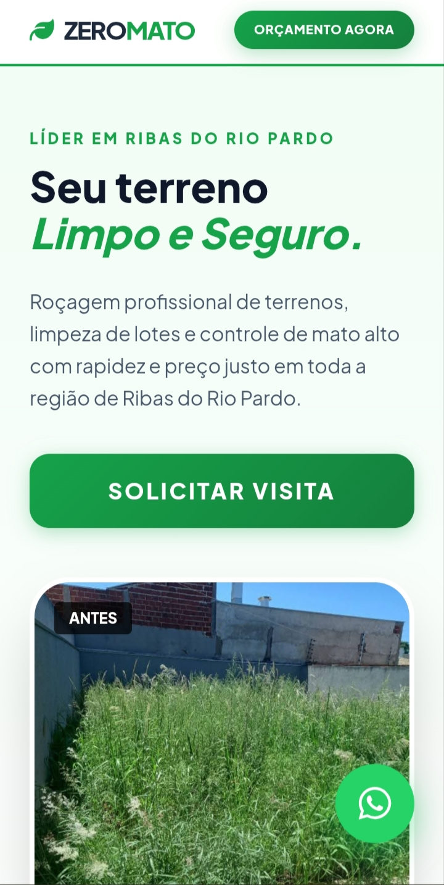

Abaixo estão os projetos desenvolvidos para alta conversão.

Roçagem profissional e limpeza de terrenos.
Manutenção e automação de portões eletrônicos.
Manutenção preventiva de ar-condicionado.
Reparos elétricos residenciais 24 horas.